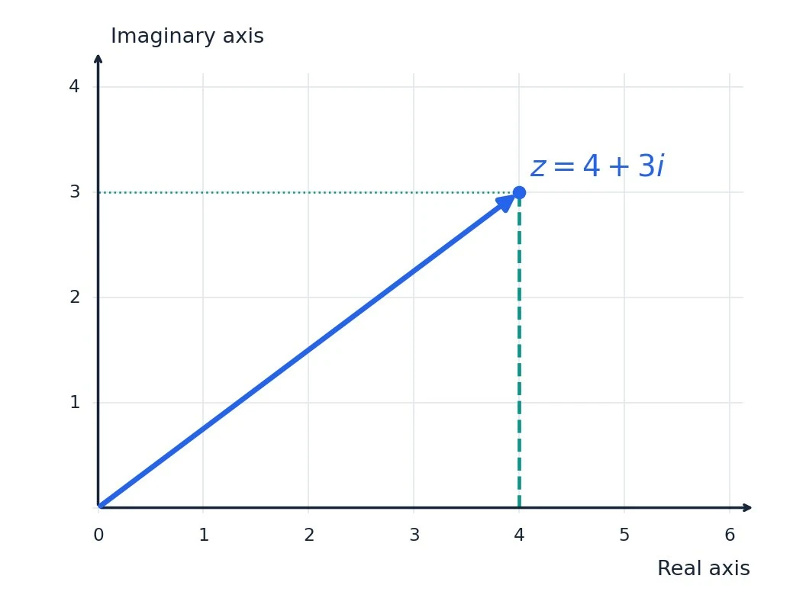
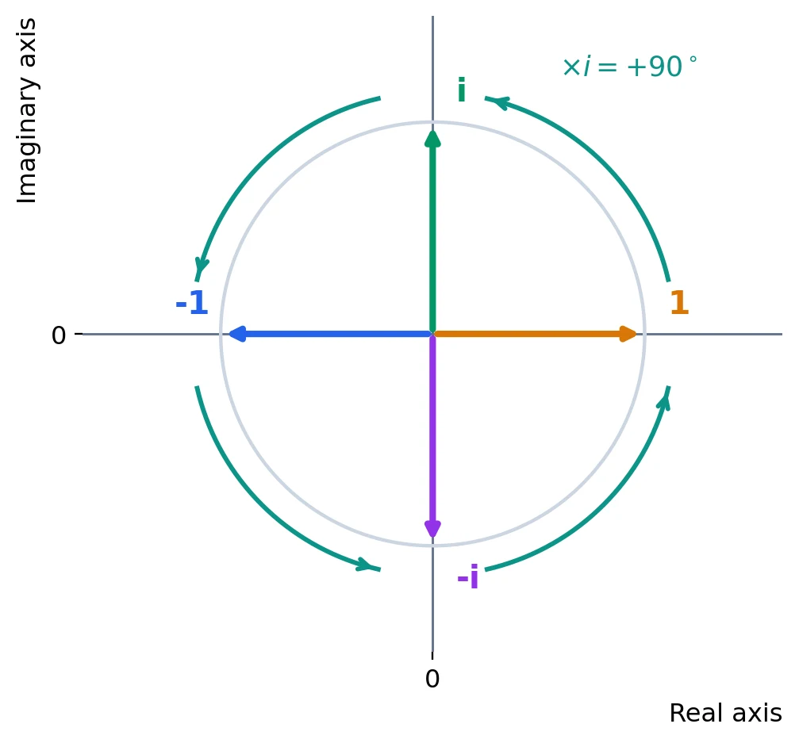
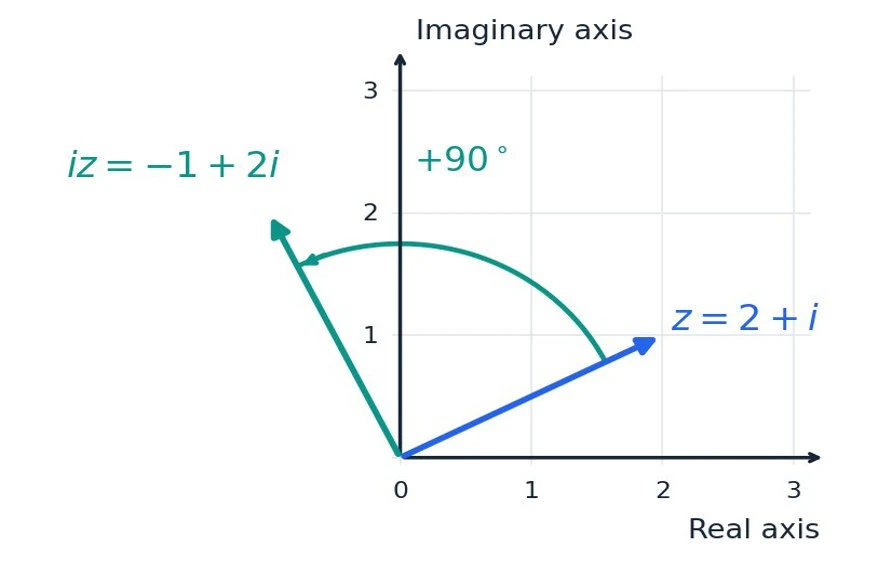
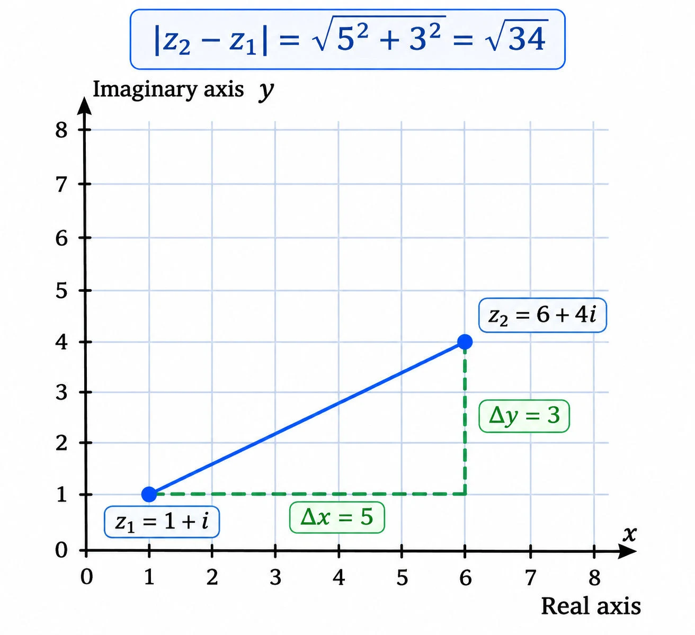
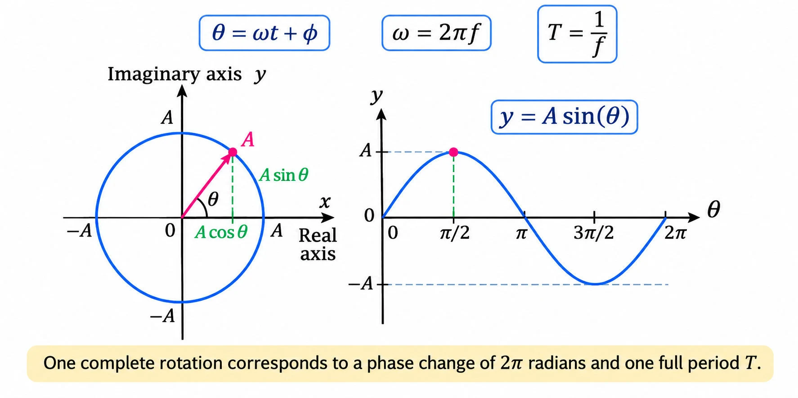

Imaginary and Complex Numbers — From Algebra to the Physical World
Advanced extension on number families: how complex numbers arise from algebra, gain geometric meaning on a plane, and describe rotation, waves, and physical motion.
When familiar numbers are not enough
Number systems expanded whenever familiar numbers could not solve a problem. This progression leads naturally to complex numbers.
- Natural numbers — counting with .
- Fractions — sharing: three oranges for four children gives .
- Negative numbers — net balance: .
- Rational numbers — ratios , (e.g. , , , ).
- Irrational numbers — a square of side has diagonal ; is irrational.
- Real numbers — rationals and irrationals on one line, yet still not enough for every polynomial.
The equation that challenges the reals
Consider the equation that has no real solution:
For every real , we have . Define the imaginary unit by .
is not a point on the real line; it belongs to an enlarged number system.
A surprising cubic equation
In the 16th century, cubics could produce complex intermediate steps even when the final roots are real (casus irreducibilis).
Check : .
Cardano’s formula can involve negative square roots:
Since :
Imaginary parts cancel; complex numbers are essential intermediates for a real answer.
Giving numbers a second dimension
Real part , imaginary part . Example: → point (Argand plane).

Multiplication by i: a quarter-turn
Successive multiplication by i:
Each multiplication by rotates a point counterclockwise about the origin.
For :
Point maps to — the rule for a turn.


Magnitude and direction
Modulus (length) and argument (direction from the positive real axis):
Example: gives .
Distance between two complex numbers:
Example: , → .

From circular motion to sine waves
A vector of length A at angular speed ω with initial phase φ has projections:
Circular motion projected onto an axis produces sinusoidal motion. Frequency , period .

Physical phenomena
- Spring–mass (undamped): simple harmonic motion.
- Pendulum (small angle): approximately sinusoidal.
- AC voltage — e.g. .
- Waves and signals: a complex amplitude encodes size and phase; tracks phase in time.
Euler’s formula and multiplication
Multiplication scales magnitudes and adds angles — ideal for rotation, phase, and periodic signals.
A glimpse of quantum mechanics
In quantum mechanics the wavefunction ψ is complex-valued. The time-dependent Schrödinger equation uses i:
A full treatment is beyond this lesson; the form shows why complex numbers remain central in modern physics.
Key takeaways
- extends the reals.
- Complex numbers live on a plane with real and imaginary parts.
- Multiplying by is a counterclockwise rotation.
- Modulus and argument give magnitude and direction.
- Uniform circular motion links to sine and cosine.
- Complex numbers unify oscillations, phases, and waves.
Mathematical insight: Mathematics reveals structures shared by algebra, geometry, and physical motion.
Practice problems
- Solve in ℂ.
- Plot and find .
- For , compute and interpret geometrically.
- Starting at , find , , , under repeated multiplication.
- A vector has , , . Write .
- Explain why complex intermediates can appear when a real solution is sought.
Answers (check)
Algebraic methods may pass through complex values before returning real roots (see the cubic example).